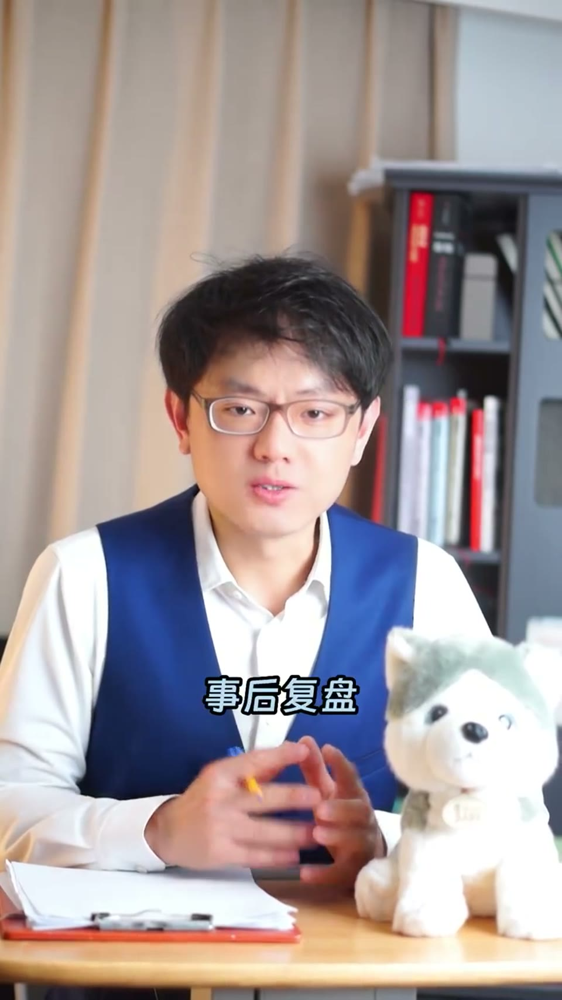
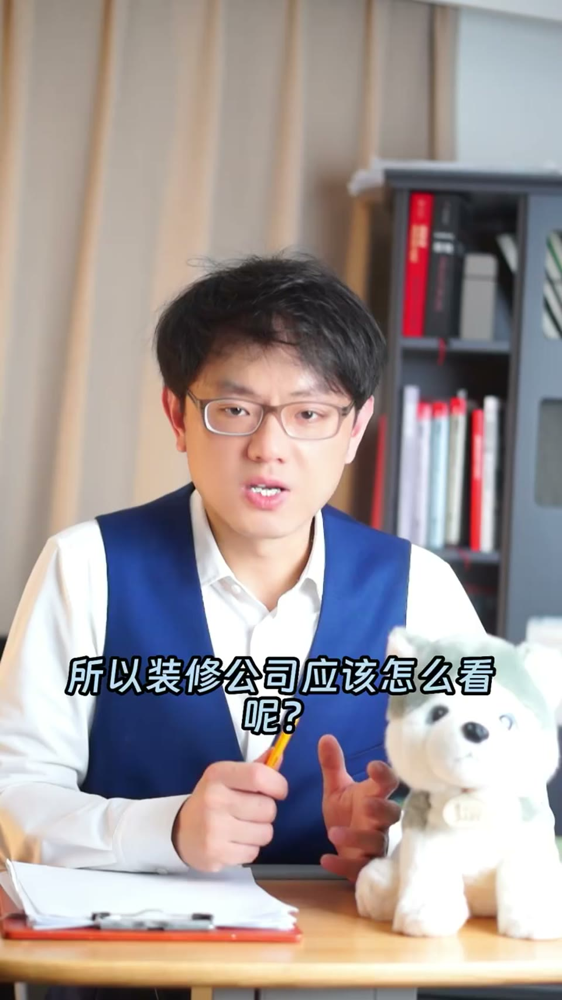
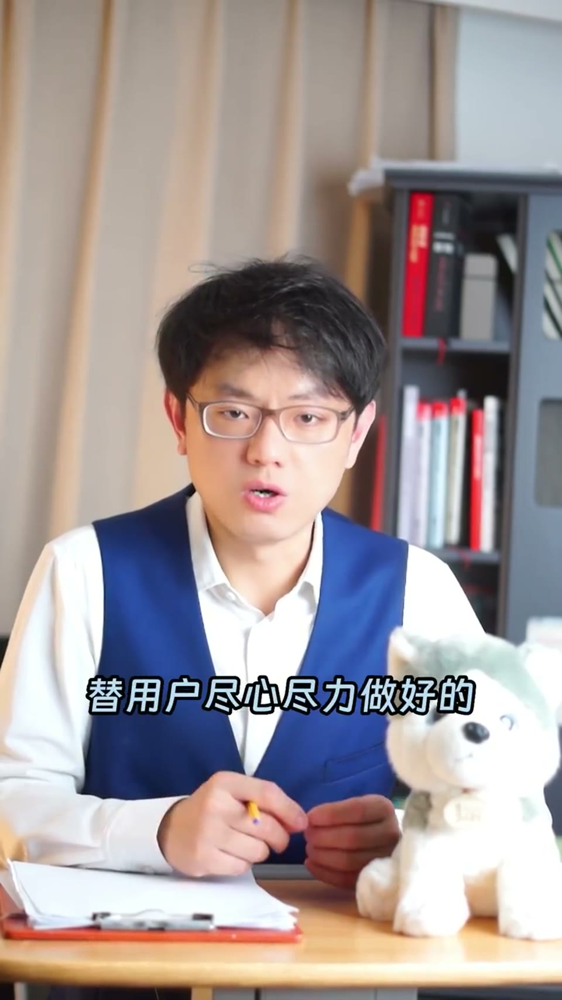

01
中文
我家去年花了40万装修，我还是中招了一点点。
EN
Last year I spent 400,000 on renovating my home, and I still got taken in a little.
表达提示中招：got taken in

Scene English · 视频学习
How Renovation Companies Rip You Off — Three Business Insights
🎧 语音讲解
Opening: a 400k renovation, 30k down the drain
情境讲者说自己去年花40万装修，作为擅长逻辑思考的职业经理人还是中招约3万，复盘后分享怎么绕开这些坑的三点原创商业思考。
我家去年花了40万装修，我还是中招了一点点。
Last year I spent 400,000 on renovating my home, and I still got taken in a little.
表达提示中招：got taken in
作为一个擅长逻辑思考的职业经理人，事后复盘，大概有3万是坑。
As a professional manager who prides myself on logical thinking, looking back I found about 30,000 went down the drain.
表达提示事后复盘：looking back；是坑：went down the drain
这条视频跟你分享一下怎么绕开这些坑，有三点原创的商业思考。
In this video I want to share how to steer clear of these traps — three original business insights.
表达提示绕开坑：steer clear of the traps
花40万装修 → 照样被坑
逻辑强的人 → 也难逃3万损失
Insight one: ads, reviews and store counts are traps
情境第一点：选装修公司不能看任何形式的广告，点评网的评分也靠不住，公司会派人盯你写好评；博弈论讲「浪费是一种炫耀」，门店多是重资产不是实力；要看反向指标——去法院网站查起诉数量，越小越好。
第一，选装修公司不能看广告，点评网站的评分也靠不住，公司会派人盯着你写好评。
First, don't pick a renovation company by its ads — even review-site ratings can't be trusted, because they'll have people nudge you into leaving good reviews.
表达提示靠不住：can't be trusted；盯着写好评：nudge you into good reviews
门店数量多不等于有实力，房租水电没了，支出也会像打开的水龙头一样哗哗流出去。
Having more stores isn't the same as having strength — even without income, expenses gush out like an open faucet.
表达提示资产很重：asset-heavy；哗哗流出去：gush out like an open faucet
最好的办法是去法院网站查起诉这家公司的数量，反向指标，越小越好。
The best move is to check the court's website for how many lawsuits are filed against them — a reverse indicator, and the fewer, the better.
表达提示反向指标：a reverse indicator
广告多 → 反而要警惕
门店多 → 重资产是负担

Insight two: overage charges are a prisoner's dilemma
情境第二点：对装修公司投诉最多的是增项多，但要替他们说的公道话是——装修本来就需要很多钱；报价时所有公司都会故意漏报增项做低价格，谁报实在价谁就没客户，这是囚徒困境。
第二，投诉装修公司最多的是增项多，但客观讲，装修本来就需要很多钱。
Second, the top complaint about renovation companies is overage charges — but honestly, renovation just costs a lot of money.
表达提示增项多：overage charges；客观讲：honestly / to be fair
报价时所有公司都会故意漏报增项、做低价格，谁报实在价，谁就没客户。
Every company intentionally leaves items off the quote to keep the price low — quote an honest price and you'll lose the customer.
表达提示漏报增项：leave items off the quote；做低价格：keep the price low
所以这是一个囚徒困境：对方坦白，我不坦白，我就没订单。
So it's a prisoner's dilemma: if everyone else lowballs and I don't, I get no orders at all.
表达提示囚徒困境：prisoner's dilemma；没订单：get no orders
增项多 → 根源是报价竞争
报实价 → 没客户，只能跟着漏报

Insight three: pick a foreman building his reputation
情境第三点：最好找熟人介绍的工长，电视台、网红的营销费用最终会靠增项或以次充好转嫁给你；但有个悖论——要选刚独立出来、单子不多、正在做口碑的工长，一旦订单多到做不过来，就只能用外包工，外包工做一单拿一单的钱，只想赶紧干完去下一单。
第三，最好找熟人介绍的工长，电视台、自媒体网红的营销费用，最终都会靠增项或以次充好让你买单。
Third, get a foreman recommended by someone you know — the marketing costs behind TV and influencer ads eventually get paid by you through overages or shoddy materials.
表达提示以次充好：shoddy materials；营销费用：marketing costs
要选刚独立出来、单子不多、正在做口碑的工长，一旦订单多到做不过来，这个工长就不能用了。
Pick a foreman who just went independent with few jobs and is building his reputation — once he's swamped with orders, he's no longer a good choice.
表达提示正在做口碑：building his reputation；订单做不过来：swamped with orders
因为订单一多他就只能用外包工，外包工做一单拿一单的钱，只想着尽快干完去下一单。
Because too many orders means subcontractors, and they get paid job by job — all they care about is wrapping up quickly and moving on.
表达提示外包工：subcontractors；做一单拿一单：paid job by job
营销费 → 最终转嫁给你
口碑变好 → 工长就开始用外包
表达「中招被坑」
表达「广告越猛越要警惕」
说「增项多」
表达「正在做口碑的阶段」
中文「40万」直译成 ten-thousands 不地道，英文直接用具体数字 400,000。
「门店多=可靠」直译生硬，用 doesn't mean 的否定句式更口语、更有力。
「让你写好评」用 nudge someone into doing 更贴切，review 比「好评打分」更自然。
「尽快结束去干下一单」用 wrap up / move on 表达更地道，order 在装修语境用 job 更合适。